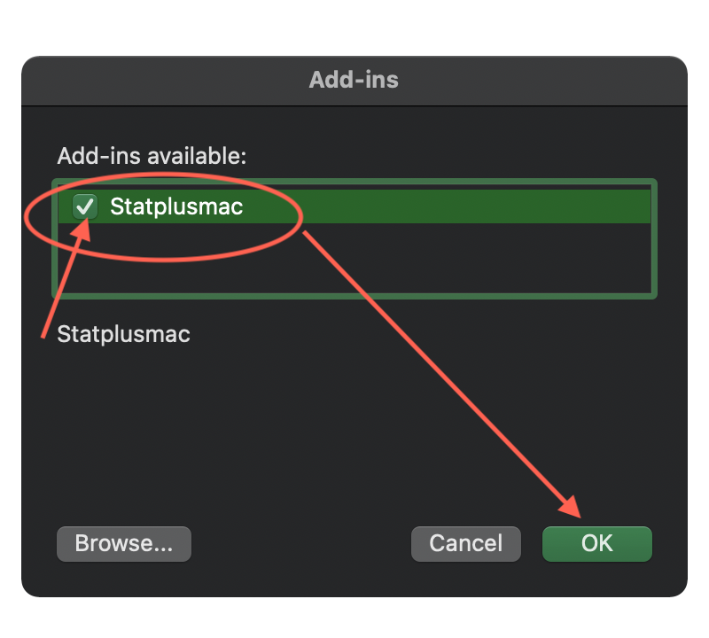
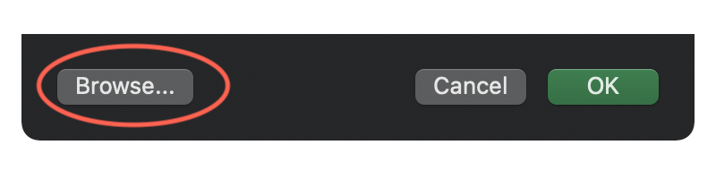
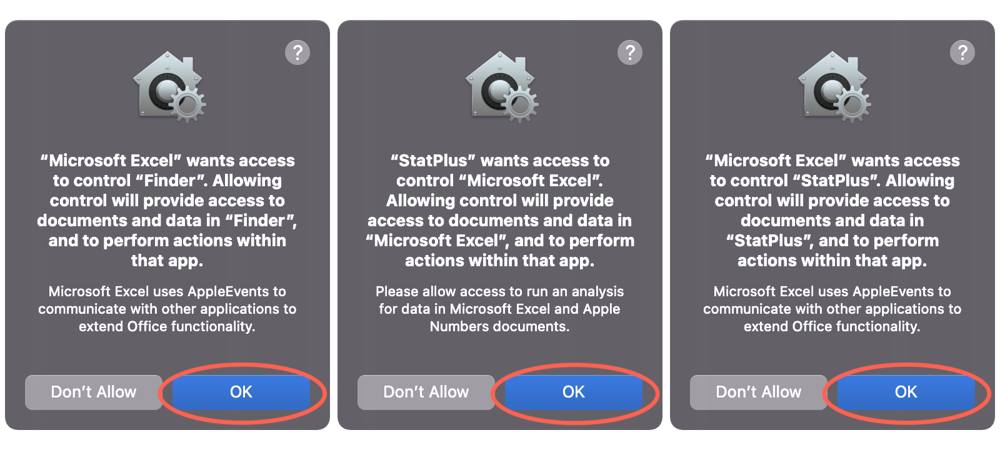

class: inverse layout: true --- ##How to Activate StatPlus:mac Ribbon * Please **make sure that the Excel app has been restarted**. <br/> * If there are any unsaved changes, a prompt appears – please take an action to quit Excel and start it again. * Open the `Tools>Excel Add-Ins...` command from the Excel main menu. * In the `Add-ins` dialog box: **check the checkbox near the `StatPlusMac` item and click the `OK` button**. The `StatPlus:mac` tab should show up in the ribbon. .center[ <a type="button" class="btn btn-success" href="javascript: slideshow.gotoSlide(3);">Thanks, this helps</a> <a type="button" class="btn btn-danger" href="javascript: slideshow.gotoSlide(2);">Oh, there is no such item in the list</a> ] .center[ <p></p> ] --- ##When the “StatPlusMac” item is missing If you don't see the `statplusmac` item in the `Tools>Excel Add-Ins...` dialog, please try adding the ribbon integration file (**the add-in file**) manually: 1. Click the `Browse` button at the bottom of the `Add-Ins` dialog.<br/> <p></p> 2. <a type="button" class="btn btn-success" href="javascript:window.helpWindowController.ScriptLocateXlam();">Click here, to show **the add-in** file in Finder.</a> 3. Drag **the add-in file** (`statplusmac.xlam`) from the Finder window into the dialog opened at the step #1 and click the `Open` button. 4. Finally, in the `Add-ins` dialog box: **check the checkbox near the `StatPlusMac` item and click the `OK` button**. .center[ <a type="button" class="btn btn-success" href="javascript:slideshow.gotoSlide(3);">It worked</a> <a type="button" class="btn btn-danger" href="javascript: slideshow.gotoLastSlide();">No, something went wrong</a> ] --- # <i class="fa fa-exclamation-triangle" aria-hidden="true"></i> Last but not least When you see one of these prompts - click the **`OK`** button.<br/>If you accidentally clicked the `Don't Allow` button - please contact us for help. .center[ <a type="button" class="btn btn-success" href="javascript:window.close();">OK, close this window</a> <a type="button" class="btn btn-danger" href="javascript: slideshow.gotoLastSlide();">Contact us for help</a> ] <br/> .center[ <p></p> ] --- # <i class="fa fa-comments-o" aria-hidden="true"></i> ¿Questions or suggestions? * Did something go wrong? * Run the `Spreadsheet > Excel Menu Integration > Disable` command from the StatPlus main menu. * Quit Excel (closing the window does not quit the app, use the Excel menu command: `Excel > Quit Excel`). * Open Excel again, and check that there is no `statplusmac` item when you open the `Tools > Add-Ins...` dialog. If the `statplusmac` item is present – select it and Excel should offer to remove it from the list. In this case you can start the integration again. <br><br> * Run the `Help->Chat With Us` command to chat in the Messages app. * Use the contact form on our web-site: <a href="https://www.analystsoft.com/en/contact/"> <i class="fa fa-envelope" style="width: 2rem;" aria-hidden="true"></i> Contact Us</a> * If you are online now, <a href="javascript: zE('webWidget', 'show'), zE('webWidget', 'open');">click here</a> to start chat in this window.